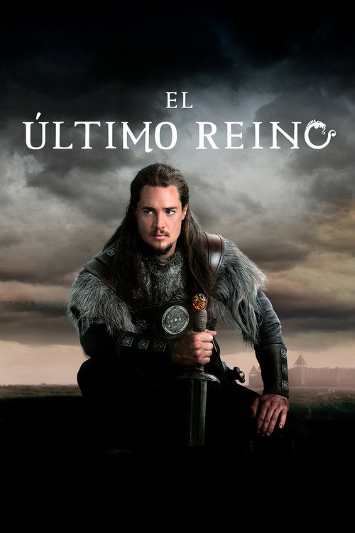
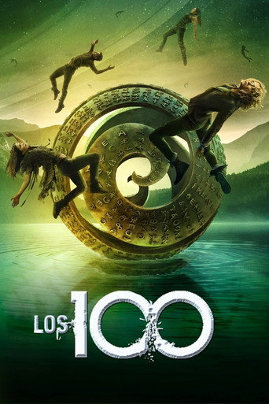
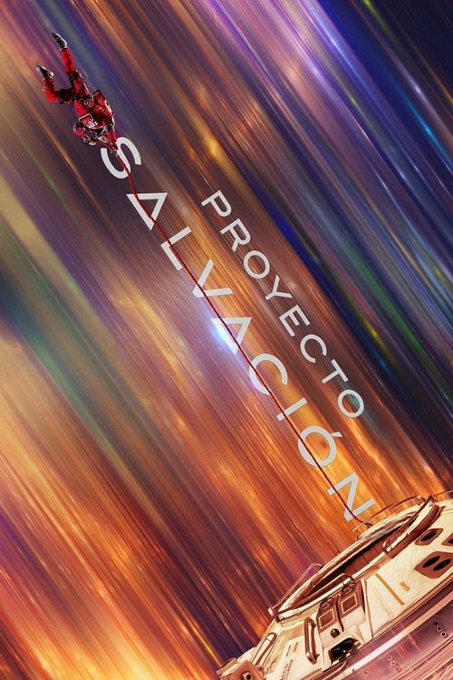
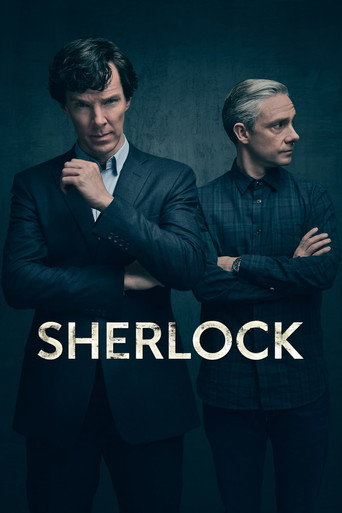
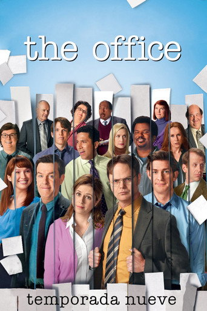
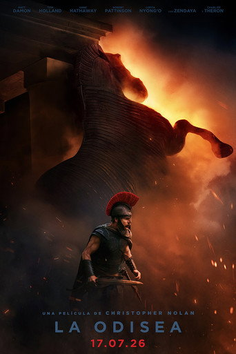
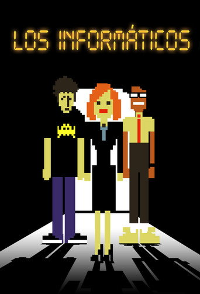
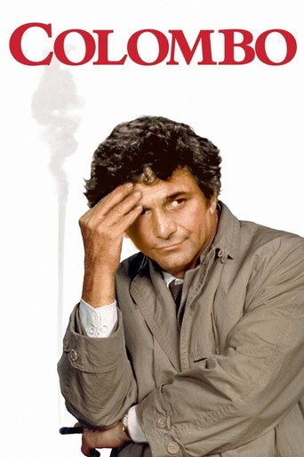
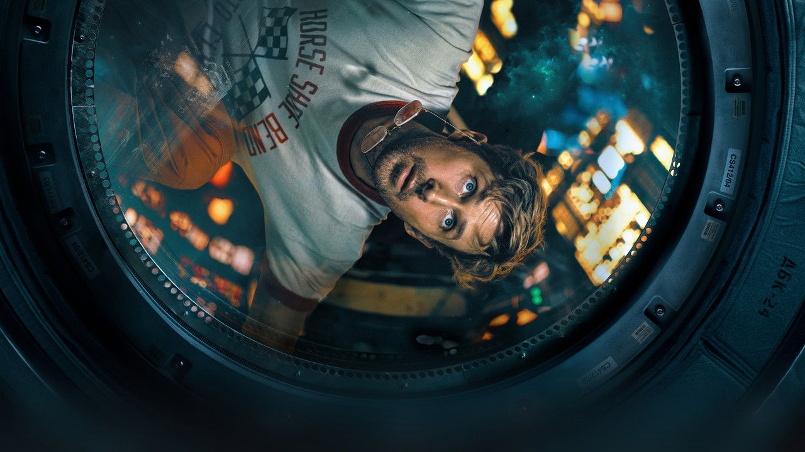

Tus series, al día.
Seguir viendo

Los informáticos 2006
Temporada 4, episodio 3te quedan 4 episodios
Logotipo
K
Caja alta por CSS, KulturaDisplay 800. El monograma es el tramo «visto» de la pista: el bloque de escena con chaflán.
Paleta
Sala#0a0a0a · L14
Superficie#161412 · L19
Elevada#24201c · L25
Tinta#f4f1ec · 17,6:1
Apagado#aaa49b · 8,0 / 7,4 / 6,5:1
Escena (de la portada)#ff6b3d · L71 C0,19 H37
Reserva#b9afa3 · L74 · 9,1:1
Visto · 10,9:1
Error · 9,6:1
Contrastes sobre sala / superficie / elevada. El error se aleja del acento (rosado, H≈5) y siempre lleva icono y texto.
Tipografía
Tus series, al día.
Año épico
Tus datos, siempre tuyos.
Marcas el episodio al terminarlo y sabes por dónde vas, en el móvil o en el escritorio.
T2 E5 · cap. 112 · p. 240 · 12 h
Forma e imagen

Los informáticos

Proyecto SalvaciónRetícula
4 columnas a 390 · 12 a 1440 · margen clamp(16, 2,2vw, 32) · medianil clamp(8, 1,2vw, 16) · máx. 1440Material a sangre con 2 px · espaciado base 4: 4 · 8 · 12 · 16 · 24 · 32 · 48 · 64 · 120 · 160Movimiento: marcar visto llena el tramo en 160 ms; desde teclado, sin animación